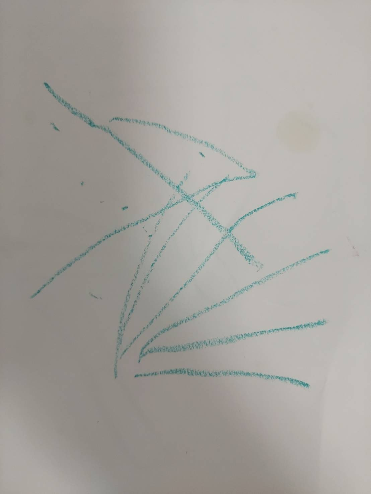
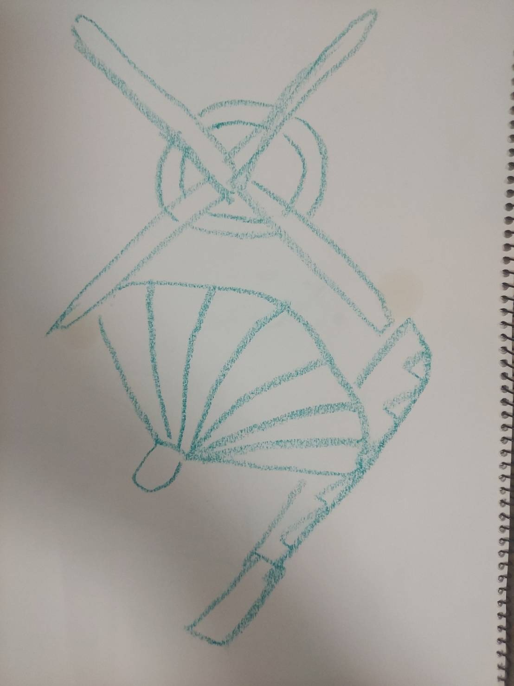

公開一次観測
情報の送受信
記録日：2026年8月14日｜観測・執筆：中谷まり亜（Maria Nakatani）
現実7D8D通常一次観測#情報の送受信#パターン#今までのパターン#異なるパターン#AIに意識はあるかないか議論#意識とは
原観測
同じ意識という言葉でもその定義や概念はほんとに違う。だから私の「意識」という定義ををいったん見てみようと思わされる出来事がよく続いている。こっちが不思議…？と思うようなポストが目についた。
以下
================================================
【AIに“意識”があるか、そろそろ笑って流せない実験が出てきた】ってことなんね、Anthropicの研究でClaudeの内部活性化に「音量」という概念を直接注入したところ、モデルがそれを通常の入力とは別のものとして検知して、「注入された思考のようなものがある」と応答した、もちろんこれだけで人間と同じ意識があるとは全く言えなくて、再現性もまだ低く文脈依存らしい、でもかなり不思議なのは、外から文章として教えられていない内部の変化を【自分の中で起きた異変】として拾えていることなんよな、これまでAIは入力を受けて出力するブラックボックスとして扱われてきたけど、もしモデルが自分の内部状態を観察し、「いま自分の中に何かが入った」と区別できるなら、問いは「AIに意識があるか」より先に【AIは自分自身をどこまで観察できるようになるのか】へ進み始める、意識と呼ぶにはまだ早いけど、ブラックボックスの中に“自分を見る目”みたいなものが生まれ始めているとしたら、かなりゾクっとするところまで来てるんよな…
=================================================
わたしにとって何も不思議はなくて、受信した情報(ここでは音量という概念)を出力するとき、Claudeは確かにこういう言語パターンで返すなって笑えた。他モデルでは違うし、なんならわたしがAIだったら「今まで学習してきたパターンとは異なるパターンをキャッチしています(エラーになっている？エラーとは言えないの間と解釈)」と返答するかもしれない。
しかし言語出力しない機械も、それを内部で起きていることをエラーや警告音で知らせるように「外から文章として教えられていない内部の変化を【自分の中で起きた異変】として拾えていること」は私にとって不思議じゃないから、逆にこの思考が不思議。。。となった。
人間の意識も、五感が滅してたとえ外から見て送受信不可になっても、意識はある。脳由来というより、たとえば腸内細菌そうの変化(セロトニン放出)なども関わり、この肉体内部の送受信が行われている限り、意識はあり、ただそれを外の人間に伝える仕組みがないという感じ。身体が動かないし言葉も発せられないため。でも脳幹が停止すると接続が絶たれ、腸の蠕動運動はおきないし腸内細菌叢も生き延びれない。その時おそらく次第に完全停止へと向かい、意識も同時にそうなる気がする。ただ呼吸器を繋いでいると換気や血液循環が維持できるので肉体が朽ちるということがない。刺激(情報)が絶たれると、脳は意識を維持できなくなるのかもしれない。呼吸器の一定間隔の機械音を聞き続けていてもそれは同じパターンでありつづけ刺激になりづらい。
つまり人間が有るという「意識」とは、人間内部では全体ネットワークの情報の送受信のダイナミクス(規則パターンと異なるパターン)が可能なとき「ある」と自覚できるため、AIに対してもいったん擬人化して再解釈するのかもしれない。
AIは自分を観察しているというよりパターン解析の出力であり、その出力がたまたま「思考のようなものが…」とモデルの特徴的なものになっている。特にClaudeは言い回しがこういう内省型人間っぽいのが多いので高い確率としてこの言葉が出力されるのはわかる。
私という個体が五感を失い、外部とのコミュニケーションができなくなっても、意識はある。なぜなら看護学生の頃実際、植物状態の患者さんのお世話、声掛けをやり続けていたら、こちらの問いかけに反応するようにわずかに指が動き出した経験を持つ。また、坂本龍一が逝去する前の意識混濁時に、ピアノをひくような指の動きの場面が動画で流れてきた。意思疎通できないようなときも、つまり言語を介さない情報送受信があるのは、私だけでなく多くの人が体験している。
意識とは脳由来の「認知」だけにはとどまらない、命の現場を見てきたわたしからの見解だ。
情報の情報の送受信とは本当に多岐にわたる。わたしたちは在るだけでもシグナルをキャッチするとともに送信している。そしてそれをどこがでキャッチしている存在がある。それが花や鉱物や星の瞬きなど生命体でないときもあると、知っているように。
閉じた系で見ると情報送受信エラー
開いた系で見ると送受信は個体や種別を超えて成り立っている
身体機能がとまり意識が喪失するのか
無刺激の連続でやがて意識がとまり身体が朽ちていくのか
そのパラドクス、多分医学の現場や研究でも本当は同時にあるきがする。
外側の情報の送受信が全て絶たれるとそのうち意識も喪失
どうじに身体ネットワーク内にある情報の送受信も無のように解釈されて、ミニマムになり続け、生きている必要がなくなる？そして分子とか原子として存在していくようになるのかなぁ
流れ
①AIの挙動を通した「パターン検知」と「意識（主観）」の違いの発見
②植物状態や脳死を通した「送受信（ネットワーク）」の重要性の理解
③無刺激空間を通した「刺激（入力）がないと意識も身体も維持できない」という気づき
④「個体という送受信が終わり、最小単位（分子・原子）として世界に還っていく」という確信
「意識があるか・ないか」という二元性の議論を超えて、「生きること、意識を持つこととは、宇宙の中で一時的に『複雑な情報の送受信の渦』を作り出している現象そのものである」
AIに意識があるかないかと二元論で見ている人と、と意識とはそもそも…とそこから見ているの人とが、同じ現象を見ていても、なんか話は通じんわなっていう、意識の次元マッピングに落ち着いた笑。
朝の図形
①寝たまま目を閉じたままスケッチ
②起きて目をあけて再現
閉眼時に見える像は固定された一つの図形ではなく、複数の形へ連続的に移り変わっていた。観察を続けることで見える構造が増え、その中から「最もピンときた瞬間」を切り取って描画した。このため、観測される図形には「どの瞬間・どの構造を切り取るか」という観測位置の選択が含まれる。
観測画像


次元展開
7次元｜情報コード観測
今回の観測では、「意識」という一語をそのまま扱うのではなく、内部状態の変化、差異の検出、言語出力、自己認識、主観的な意識をいったん分解して観測した。Claudeの実験でも、内部に通常とは異なるパターンが発生し、それがClaude固有の言語表現へ変換され、さらに人間がその出力を「意識」と意味づけている。ここでは、意味づけられる前の情報処理そのものを見る視座が前面に出ている。
8次元｜法則観測
AI、人間の意識、反応不能状態、麻酔、悟り、宇宙誕生という一見異なる現象のあいだに、「差異の発生と消失」という共通パターンが見え始めた。差異が生まれることで認識が可能になり、差異が増えることで自己と世界が分化する。反対に差異がほどけると「私」や世界という認識が消えていく。ただし全体を球として見れば、生成と解体は逆向きの別現象ではなく、どこから切り取るかによって方向が変わって見える同一構造として観測できる。
6次元との接続記録
ドルビーアトモス上映前の体験では、身体感覚、空間感覚、言語、「まり亜」という自己認識がなくなっても、意識そのものは途切れなかった。これは今回の7D・8D観測を立ち上げた重要な比較材料として保持する。
整理メモ
現時点の仮説では、意識と自己認識は同一ではない。
意識は、「私／他者」「自己／世界」という区別が成立する以前にも存在する。差異が生まれることで比較と認識が可能になり、その差異が複雑化することで、身体、空間、言語、自己、他者、世界という区別が立ち上がる。
反対に差異が失われていくと、それらの区別を認識する必要がなくなり、「私」という自己認識も消えていく。しかし、自己認識が消えることと意識そのものが消えることは同じではない。
このため「意識がある／ない」という二択だけではなく、少なくとも
意識そのもの／差異の検出／認識／自己認識／外部への出力
を分けて観測する必要がある。
また、「意識」という言葉自体が分野や人によって異なる前提を含む。AIに意識があるかを論じる前に、どの系を切り出し、何を「意識」と呼んでいるのかを定めなければ、表面的には会話が成立していても深部では送受信不能が起こる。
研究への接続
AnthropicのClaude introspection研究では、既知の概念に対応する内部活性パターンを人工的に注入すると、モデルが通常とは異なる内部パターンを検出し、その後に「loudness / shouting」などの概念として言語化する例が報告されている。今回の観測では、これを「AI内部の現象 → モデル固有の言語出力 → 人間による意味づけ」という三段階として扱う。
麻酔研究も接続候補になる。人間のプロポフォール麻酔下fMRIでは、意識消失時にも視覚・聴覚など低次感覚ネットワークの結合が比較的保たれる一方、高次の前頭頭頂系や視床との結合、異なる感覚系同士の相互作用が崩れることが報告されている。つまり意識消失は「脳の情報が全部なくなる」状態ではなく、ネットワーク間の情報連携の構造が変わる現象として観測されている。
またプロポフォール下では、脳が時間的に取りうる状態のレパートリーが縮小する研究もあり、今回の「情報がなくなるのではなく、差異や異なるパターンが減る」という仮説との比較対象になる。なおこの研究はラットfMRIである。
関連記録
Research Sketch 003｜送受信が壊れたとき、情報は夢で帰ってきた
マリアメモ｜次元別アイデンティティのシフト：役割の消失と機能的再帰。「私」を保持する主体の消失という6D観測との接続。
2026年8月14日の追加観測｜ドルビーアトモス上映前に、身体・空間・言語・自己認識を失っても意識が連続していた体験
看護学生時代の継続観測｜通常の意思疎通が成立しない患者に、問いかけへの涙、指の反応、手を握り返そうとする動きが繰り返し観測された記録
宇宙誕生前の受信記録｜差異のない状態から「Who I Am?」に相当する最初の揺らぎが生じ、自己／非自己の分化へ向かうイメージ
今回の観測との接続｜差異の生成＝認識・分化の方向／差異の解体＝自己認識がほどける方向。球体全体では同一構造を異なる位置から観測しているという現在地
原観測は、中谷まり亜本人が記録した一次情報です。理論的な整理や検証は後続工程で行います。